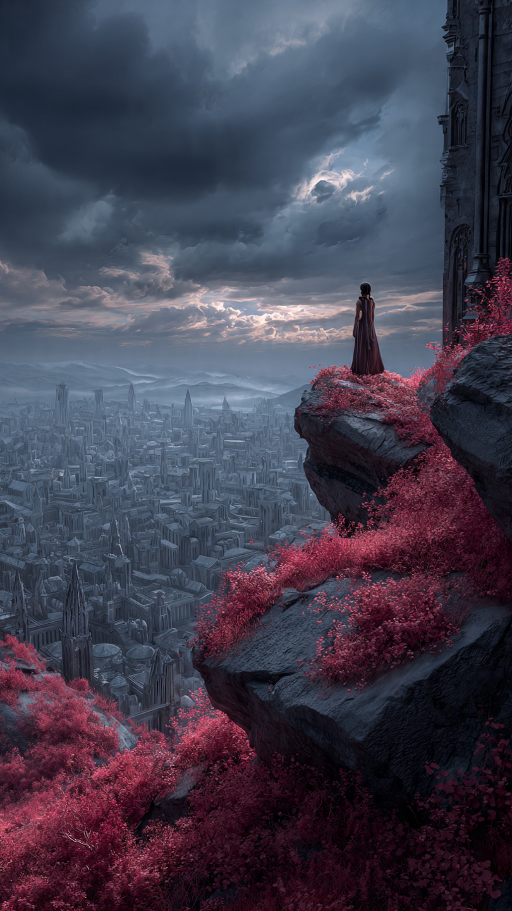
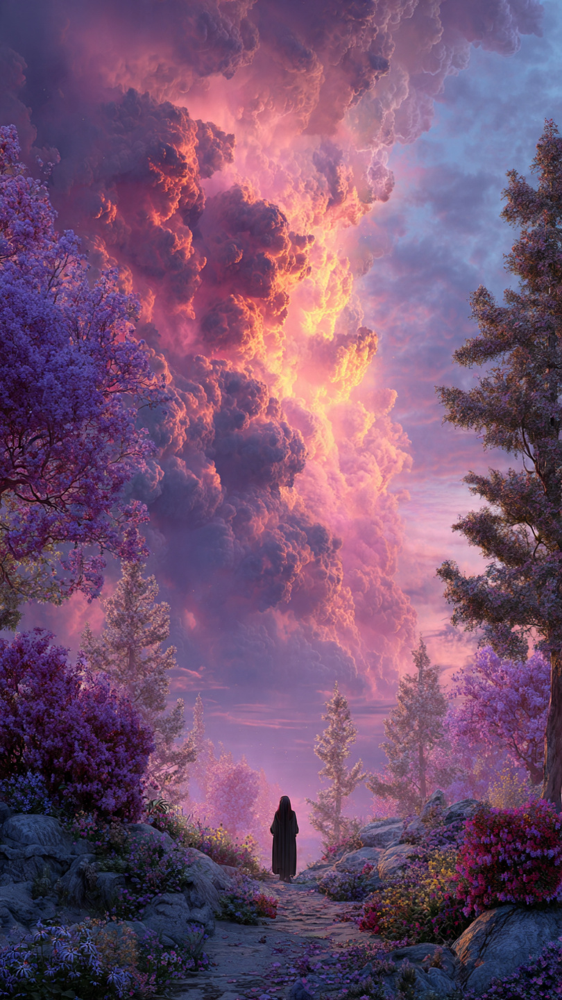

كان هناك عالم يُسمى "أراليا".
لم يكن عالمًا عاديًا.
فقد كانت ألوانه أكثر جمالًا من أي مكان آخر.
كانت السماء زرقاء لامعة، والحقول خضراء كأنها بحر من الحياة، والزهور تحمل ألوانًا لم يرها البشر في أي مكان آخر.
كان الناس يقولون إن ألوان أراليا ليست مجرد ألوان...
بل هي سحر قديم يجعل العالم مليئًا بالأمل.
في إحدى القرى الصغيرة، كان يعيش طفل يُدعى آدم.
كان آدم يحب الرسم.
وكان يحتفظ بدفتر كبير يرسم فيه كل شيء يراه.
كان يرسم الأشجار.
والأنهار.
والطيور.
وكان يؤمن أن كل لون يحمل قصة خاصة.
فالأزرق يحكي عن هدوء البحر.
والأخضر يحكي عن قوة الحياة.
والأصفر يحكي عن دفء الشمس.
لكن في صباح غريب...
استيقظ الناس ليجدوا شيئًا لا يمكن تصديقه.
اختفى اللون الأزرق من السماء.
لم تعد البحار زرقاء.
والزهور فقدت ألوانها.
وفي اليوم التالي...
اختفى الأخضر من الأشجار.
وبعده اختفت ألوان كل شيء.
خلال أيام قليلة، أصبح العالم رماديًا بالكامل.
انتشر الخوف بين الناس.
بدأ الجميع يتساءل:
من سرق ألوان العالم؟
حتى ظهر صوت غامض من أعلى الجبال.
قال:
"لن تعود الألوان أبدًا.""فقد حان وقت أن يعرف العالم قيمة ما فقده."
عرف الناس أن وراء الأمر ساحرة قديمة تُدعى لورا.
كانت أسطورة قديمة تقول إنها أقوى ساحرة عاشت في أراليا.
لكن أحدًا لم يرها منذ مئات السنين.
بدأ الناس يلومونها.
وقالوا:
"لقد سرقت جمال عالمنا."
لكن آدم لم يقتنع.
كان يشعر أن هناك سببًا آخر.
فالسحر القوي لا يستخدم بلا سبب.
قرر أن يصعد إلى الجبل ويبحث عن الساحرة بنفسه.
أخذ دفتر الرسم الخاص به، وانطلق في رحلة عبر الغابات الرمادية.
بعد ساعات من السير، وجد قلعة قديمة بين الضباب.
كانت جدرانها مغطاة برموز ملونة، رغم أن العالم كله فقد ألوانه.
دخل آدم بحذر.
وفي وسط القاعة وجد آلاف الزجاجات الزجاجية.
كل زجاجة تحتوي على لون مختلف.
الأزرق.
الأخضر.
الأحمر.
والذهبي.
وفجأة ظهر صوت خلفه:
"جئت لاستعادة الألوان؟"
استدار آدم.
فوجد امرأة ترتدي عباءة سوداء، وعيناها تحملان حزنًا عميقًا.
قالت:
"أنا لورا."
"وأنا لم أسرق ألوان العالم..."
"أنا فقط أخذتها قبل أن يضيع معناها."
📷 الصورة رقم 1

وقف آدم أمام الساحرة لورا وهو لا يعرف ماذا يقول.
كان يتوقع أن يجد شخصًا شريرًا يضحك بعد أن سرق ألوان العالم.
لكنه وجد امرأة حزينة تقف وسط آلاف الزجاجات المضيئة.
اقتربت لورا من إحدى الزجاجات.
كانت تحتوي على اللون الأزرق.
نظرت إليها وقالت:
"هل تعرف ماذا يعني هذا اللون؟"
أجاب آدم:
"يعني البحر والسماء."
هزت رأسها وقالت:
"بالنسبة لكم نعم..."
"لكنكم نسيتم قصته الحقيقية."
جلست لورا أمام نافذة القلعة.
وقالت:
"منذ مئات السنين، كانت الألوان مرتبطة بمشاعر البشر."
"كل لون كان يولد من شيء جميل."
"الأخضر من حب الحياة."
"الأزرق من السلام."
"الأصفر من الأمل."
ثم تغير صوتها.
وقالت:
"لكن مع مرور الزمن..."
"بدأ الناس يرون الألوان مجرد زينة."
"نسوا قيمتها."
"أصبحوا يملكون الجمال دون أن يشعروا به."
نظر آدم إلى الزجاجات وقال:
"ولهذا أخذتها؟"
أجابت:
"نعم."
"أردت أن يشعر العالم بالفراغ."
"حتى يفهم قيمة الأشياء التي كانت حوله."
لم يقتنع آدم تمامًا.
وقال:
"لكن الأطفال الذين لم يفعلوا شيئًا..."
"فقدوا الأشياء التي يحبونها."
صمتت لورا.
فقد كانت هذه أول مرة يسمعها أحد بهذا الشكل.
أخرج آدم دفتر الرسم الخاص به.
فتحت لورا صفحاته.
كانت كل الرسومات بالأبيض والأسود.
لكن في وسط الدفتر، كانت هناك صفحة مختلفة.
رسم فيها آدم شجرة صغيرة.
قالت الساحرة:
"كيف رسمت هذا؟"
أجاب:
"تذكرت لونها."
"حتى لو اختفى اللون..."
"فالذكرى يمكن أن تعيده."
فجأة بدأت الزجاجات تهتز.
وانطلق ضوء قوي من داخل القلعة.
ظهرت رموز قديمة على الجدران.
قالت لورا بدهشة:
"هذا غير ممكن."
سأل آدم:
"ماذا يحدث؟"
أجابت:
"الألوان لا تعود بالسحر."
"بل عندما يتذكر العالم معناها."
خرج الاثنان من القلعة.
ولأول مرة منذ اختفاء الألوان، ظهرت نقطة صغيرة من اللون في السماء.
ثم نقطة أخرى.
بدأت الغيوم تستعيد لونها.
لكن فجأة...
اهتزت الأرض.
وظهرت قوة مظلمة حول القلعة.
قالت لورا بخوف:
"هناك شخص آخر."
"شخص يريد أن تبقى الألوان مسجونة إلى الأبد."
📷 الصورة رقم 2

اهتزت الأرض بقوة، وبدأ الضباب الأسود ينتشر حول قلعة لورا.
اختفت النقاط الصغيرة التي بدأت تعيد الألوان إلى السماء.
ومن بين الظلال ظهر كائن غريب يرتدي عباءة رمادية طويلة.
لم يكن إنسانًا.
ولم يكن ساحرًا عاديًا.
كان يُدعى ناير.
قال ناير بصوت بارد:
"كنت أعلم أنك ستفشلين يا لورا."
نظرت إليه الساحرة بغضب وقالت:
"أنت السبب في كل هذا."
اقترب آدم وسأل:
"من هو؟"
أجابت لورا:
"إنه حارس الظلام القديم."
"كان مسؤولًا عن حماية توازن الألوان."
"لكنه اعتقد أن البشر لا يستحقون امتلاكها."
ضحك ناير وقال:
"لقد رأيت البشر يفسدون كل شيء."
"استخدموا اللون للغرور."
"والجمال للمنافسة."
"لذلك قررت أن أمحو الألوان من العالم إلى الأبد."
رفع يده.
فتحولت السماء إلى لون رمادي مظلم.
بدأت الزجاجات التي تحتوي على الألوان تتحرك نحوه.
صرخت لورا:
"إذا أخذها كلها، فلن تعود الألوان أبدًا."
تقدم آدم أمامه.
كان مجرد طفل.
لكنّه لم يتراجع.
قال:
"أنت مخطئ."
نظر إليه ناير باستغراب.
فقال آدم:
"الألوان ليست المشكلة."
"المشكلة هي كيف نستخدمها."
"هناك أشخاص يفسدون الأشياء الجميلة..."
"لكن هناك أيضًا أشخاص يجعلون العالم أجمل بها."
أخرج آدم دفتر الرسم.
فتح صفحة الشجرة التي رسمها.
وقال:
"أنا لم أرسمها لأنها جميلة فقط."
"رسمتها لأنها جعلتني أشعر بالسعادة."
بدأ الدفتر يضيء.
وانطلقت منه ألوان صغيرة انتشرت في الهواء.
لم تكن ألوانًا عادية.
كانت ذكريات الناس.
ضحكات الأطفال.
لحظات الفرح.
الأحلام.
والأمل.
تراجع ناير لأول مرة.
فقد أدرك أن الألوان لم تكن مجرد ضوء.
كانت جزءًا من حياة البشر.
حاول السيطرة على الضوء، لكنه لم يستطع.
لأن القوة التي أمامه لم تكن سحرًا...
بل كانت مشاعر لا يمكن حبسها.
اقتربت لورا من الزجاجات.
وقالت:
"حان الوقت لإعادة ما أخذناه."
فتحت الزجاجات واحدة تلو الأخرى.
وانطلقت الألوان إلى السماء.
عاد الأزرق إلى البحار.
وعاد الأخضر إلى الغابات.
وعادت الزهور ترسم العالم من جديد.
أما ناير...
فقد اختفى الظلام من حوله.
ولأول مرة منذ قرون، رأى الألوان.
جلس صامتًا.
ثم قال:
"لقد نسيت..."
"أن الجمال لا يصبح أقل قيمة عندما يشاركه الجميع."
عاد آدم إلى قريته.
وأصبح الناس يقدرون كل لون يرونه.
أما لورا، فلم تعد الساحرة التي يخاف منها الجميع.
بل أصبحت حارسة الألوان.
وكان آدم يحتفظ بدفتره القديم.
ليس لأنه يحتوي على رسومات جميلة...
بل لأنه كان الدليل على أن شيئًا بسيطًا مثل لون صغير...
يمكن أن يعيد الأمل إلى عالم كامل.